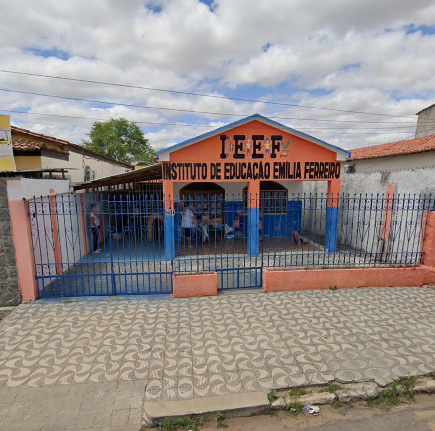
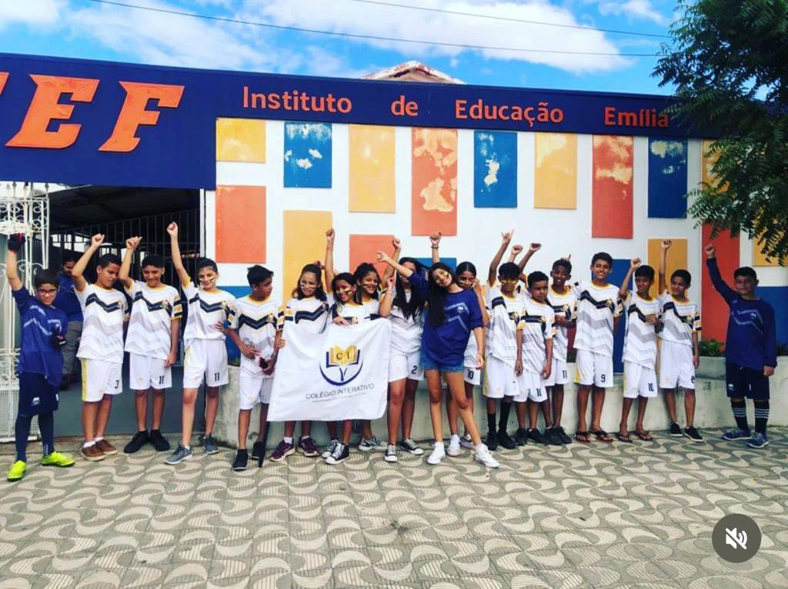
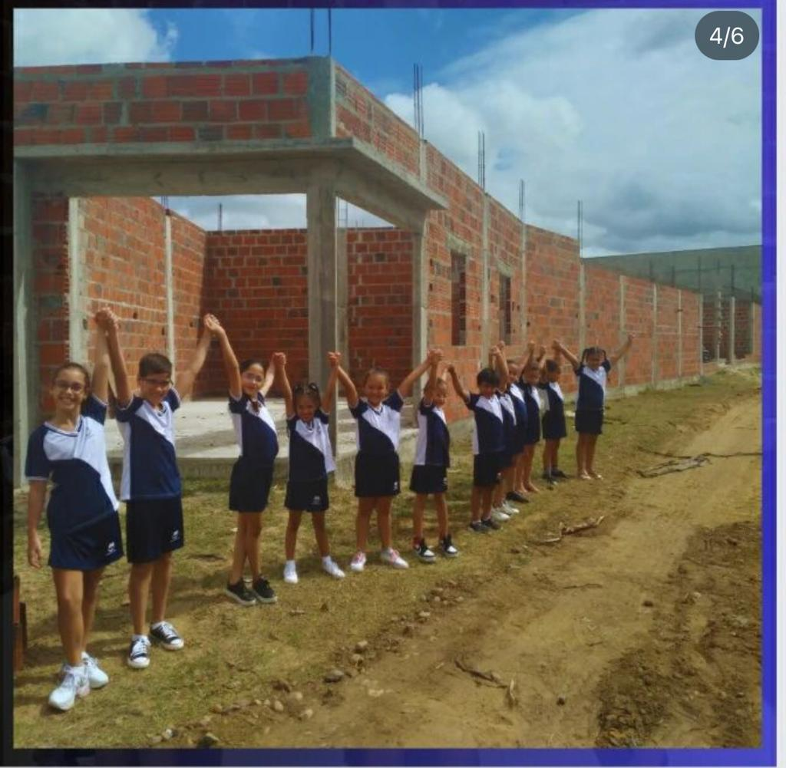

O Colégio Interativo ainda se chamava Instituto Emília Ferreiro - IEEF, quando contava com apenas 40 alunos em um espaço alugado.
O Colégio Interativo com fachada nova, já contava com 80 alunos, ainda ocupando o mesmo espaço alugado. Aqui, já surgiam as primeiras ideias para a mudança de nome do colégio.
Em 2023, o colégio começou as obras para a construção de sua sede própria, buscando oferecer um espaço mais acolhedor para os nossos alunos.
Em 2024, foi inaugurada a nova sede do Colégio Interativo, data em que foi anunciada a mudança de nome.

Para 2025, estamos preparando grandes novidades: está prevista a modernização da fachada e a conclusão do segundo pavimento, que contará com quadra poliesportiva, playground e piscina, aprimorando a infraestrutura.

Formar cidadãos críticos e criativos, preparados para os desafios do futuro.
Ética, inovação, responsabilidade social e excelência acadêmica.
Ser referência em educação inovadora e inclusiva.
Agradecemos aos nossos mantenedores pelo suporte e comprometimento com a educação.
Arlete Souza - Coordenadora Pedagógica (Infantil)
Tatiane Souza - Coordenadora Pedagógica (Fund. I e II)
Cleonice Souza - Portaria
Emilly Souza - Professora
Paula Souza - Professora
Arlete Souza - Coordenadora Pedagógica (Infantil)
Tatiane Souza - Coordenadora Pedagógica (Fund. I e II)
Cleonice Souza - Portaria
Emilly Souza - Professora
Paula Souza - Professora
Localizado na Av. ACM, s/n, em Tucano, Bahia, o Colégio Interativo se destaca pelo compromisso com a educação de qualidade e o bem-estar de seus alunos. Nossas instalações modernas e bem equipadas foram adaptadas para oferecer um ambiente acolhedor e propício ao aprendizado.
Com uma área total de aproximadamente 700m², o colégio conta com uma infraestrutura completa, que inclui salas de aula amplas e confortáveis, quadra poliesportiva, espaço para eventos e palestras, além de um espaço recreativo pensado para o desenvolvimento social e físico de nossos alunos.
Acreditamos que um ambiente bem estruturado contribui para a excelência no ensino, e por isso investimos continuamente na modernização de nossas instalações para garantir a melhor experiência educacional. Venha conhecer o Colégio Interativo e faça parte de uma comunidade que valoriza o futuro e o sucesso dos seus estudantes!